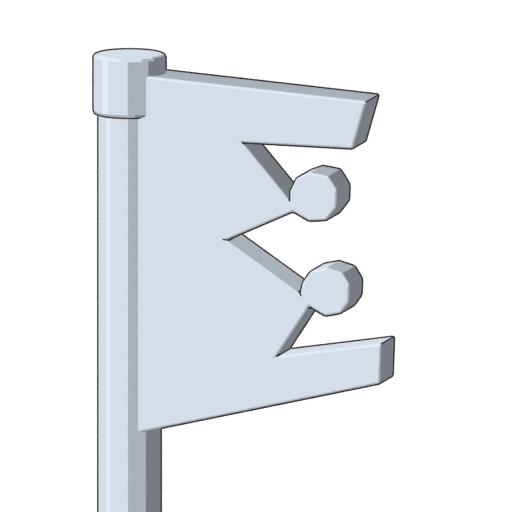
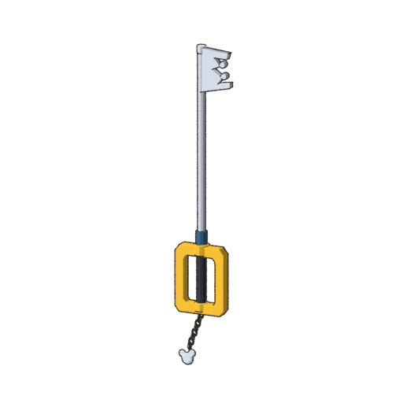

The new 3D silhouette follows the angled outer prongs, pointed recesses and two rounded inner projections in your attached weapon image. The crown root connects into the shaft. This is an approximate procedural model for review.


Open Blender scene · Download model exchange GLB · Previous tooth comparison · Review notes and checks
The Blender scene retains procedural cel materials; the GLB uses a simpler palette. Guard and chain detail remain preliminary. Sora's character mesh, rig and movement animations are unfinished.